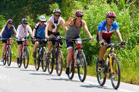

Trail Reviews
Ojai Trails
Northridge Loop
TRAIL INFO
| Trail Type: | Single Track |
| Elevation: | 2000 ft |
| Length: | 14.5 miles |
| Skill Level: | Beginner to Intermediate |
If you are looking for grear scenery and a great workout without all the technical difficulty of other trails, Northbridge Loop is for you. The ridge runs east to west, with Ojai Valley on one side and Rose Valley on the other. The trail features amazing views of both valleys plus the Los padres National Forest.
Comments
To leave a comment, you must Register or Sign In
|
|
|
Great Review! I had a blast on the west side of the loop last week.I found a hidden gem into the old orchant field past the " Lazy S " spur.If you keep going past the trail marker, you'll find a fantastic run througha dried up gulley-wash.Just stay clear of it on rainy days. |
Rider Reviews
Samporina Trail
My buddies and I had heard about this trail in November from a friend who had finished the West portion earlier in the month.It sounded like a good trail,but we didn't have time to check it out until last week.
All I can say is wow! I really hate thatI waited so long to try this trail, especially since it'a right in my backyard (I live in Ventura), My friends and I got to the first trail head around 9.30am that morning. The first portion of the trail were firebreaks and service roads, and for a while it seemed that we were just going to be going on another scenic ride
About two-thirds of the way up, we came to the first set of single-tracks breaking away from the firebreak. From then on, the trail did not let up.

If you are visiting Southern California and need a bike, give us a call and avail free pickp and dropoff facility